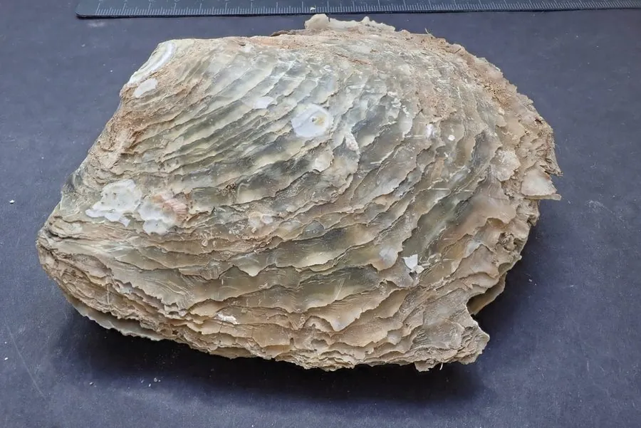

软体动物 · 动物界
大珠母贝 Pinctada maxima

体型最大的珍珠贝，壳长可达三十厘米，能培育出南洋金珠与白珠，原产东南亚至澳大利亚北部海域。
- 分类
- 门软体动物门纲双壳纲目牡蛎目科珍珠贝科属珠母贝属
- 栖息环境
- 热带海域沙泥底质海床与珊瑚礁外围
- 地理分布
- 缅甸、泰国、印度尼西亚、菲律宾至澳大利亚北部
- 保护级别
- 野生资源受捕捞管制，多国实行采捕许可与配额
物种志
大珠母贝是体型最大的珍珠贝，壳长可达三十厘米，壳重可达数公斤。两壳不等，左壳较凸，壳面灰白至黄褐，有同心圆状的鳞片层，壳内面有厚实的银白色珍珠层，边缘带金黄色，这正是南洋金珠的母贝。足部退化，靠足丝附着在沙泥或礁石上，外套膜边缘有一圈金色的肉质边缘。
它分布于缅甸、泰国、印度尼西亚、菲律宾至澳大利亚北部的热带海域，栖息在水深数米至数十米的沙泥底质海床，以滤食浮游生物为生。它是海水养殖珍珠的重要母贝，可培育出南洋白珠与金珠，养殖周期长达数年。由于野生资源长期受捕捞，澳大利亚、印度尼西亚等国对采捕实行许可证和配额管理，人工育苗与养殖成为主要供应方式。
形态与习性
- 壳长可达三十厘米，珍珠贝中最大
- 壳内银白珍珠层，边缘金黄
- 附着以足丝附着于沙泥或礁石
- 食性滤食浮游生物
- 珍珠培育南洋白珠与金珠的母贝
- 管理多国实行采捕许可与配额
趣味知识
- 它壳内那圈金色边缘，正是南洋金珠独特色泽的来源。
- 一颗南洋珠要在它体内养好几年，母贝的个头决定了珠子的上限。
- 野生大珠母贝越来越难找，如今市面上的珠子多来自人工育苗。